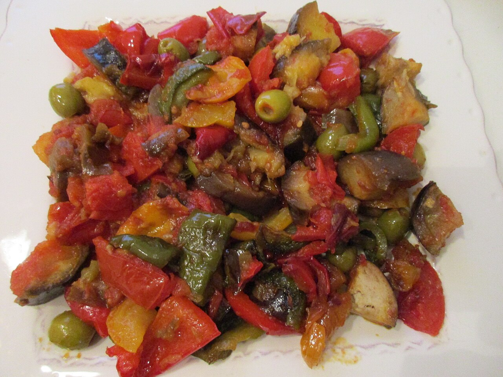

Ratatouille
home page

Description
A summer vegetable stew from Provence, in the south of France. Eggplant,
zucchini, peppers, and tomatoes are cooked separately before being
simmered together, which keeps each vegetable distinct instead of letting
it all turn to mush. It is good hot, at room temperature, or cold the next
day, and it tastes better after a night in the fridge.
Ingredients
- 1 large eggplant, cut into 1-inch cubes
- 2 zucchini, sliced into half moons
- 1 red bell pepper, chopped
- 1 yellow onion, sliced
- 4 cloves garlic, minced
- 4 ripe tomatoes, chopped
- 1/3 cup olive oil
- 1 teaspoon herbes de Provence
- 1 bay leaf
- 1 teaspoon salt
- 1/2 teaspoon black pepper
- 1/4 cup fresh basil, torn
Steps
-
Toss the eggplant cubes with the salt and let them drain in a colander
for 30 minutes, then pat them dry.
-
Heat 2 tablespoons of the olive oil in a large pot over medium-high heat
and brown the eggplant for about 8 minutes. Move it to a plate.
-
Add more oil and cook the zucchini for 5 minutes, until lightly golden,
then move it to the same plate.
-
Lower the heat to medium, add the remaining oil, and cook the onion and
bell pepper for 8 minutes until soft.
-
Stir in the garlic and cook for 1 minute, then add the tomatoes, herbes
de Provence, bay leaf, and pepper.
-
Return the eggplant and zucchini to the pot, stir gently, and simmer
uncovered for 20 to 25 minutes until the vegetables are tender.
-
Remove the bay leaf, taste and adjust the salt, and stir in the basil
just before serving.
Photo by Arnaud 25,
CC BY-SA 4.0.
{kind=link}